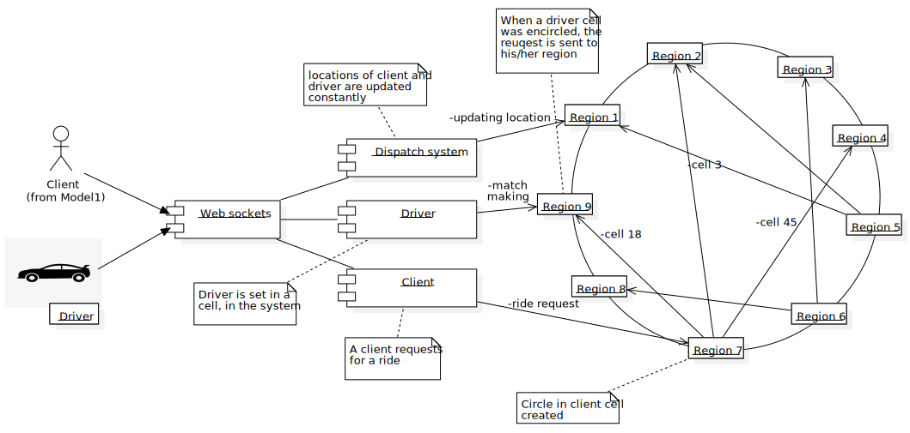

It is important to consider the point of view of two types of users for this app. First, the clients appear here as the most important, and then the drivers that work for the app.
Then, for the users, the app should have the next requirements at least:
In that way, the device location is necessary. This is important because the point of having the location enabled helps the app to look for drivers close to the zone, and it could notify one of them that there is a client that needs a ride.
For this, there is the problem that longitude and latitude are not enough or not as good to determine a good potential to give the client a good experience. Then, there was an implementation done in Google, due to the spherical condition of the earth. S2 could be used here mainly to divide the map into cells, and each cell representing an area of the earth with an id.

Figure 1: A wide view of the S2 library in the globe map.
Source: S2Geometry
Then, the app also needs the id of a cell in a map, this is helpful to let the app know to the user, and also to a driver, for a client or driver close to it. Consider this, a client could enter the app, and the he/she could see for close drivers in the zone. The point for this is that the S2 library that could be applied here let the system look for a driver, the cell id and its location insider that cell.
The match or definition of close users is considered when in the system a N km circle is defined on a specific cell, and then the system takes to list of the cells ids that are inside the area of the circle. With a list of that, the location of a driver could be related with a cell, and if that is true it is shown in the screen of the app.

Figure 2: Cell selection in a defined area.
Source: Radar
Although the client information could not be the main focus always for the good functionality, the input data of this that should be necessary for operate the app is the next one:
The driver information should be the most important here, because the driver is the person with more exposed information to operate the app. In that way, the driver is responsible to give the next data:
This case is more relevant for the client, which is considered the main focus. Then, the point of providing this information, and mainly the majority to the client, is to help him/her to identify the driver car for the ride.

Figure 3: Driver information interface.
Source: Uber
Also, the driver location is important for an emergency, of there is an assault for instance, to let the corresponding authorities to act and identify the aggressor.
As it was mentioned before, the device location is necessary not just for the client, it is necessary for the driver also. Then the location helps more the operation of matching a client with a driver for a ride.
The point of this is that the driver could get a notification of clients close to him/her in the zone. The driver can accept or decline a request for a ride of a client, and the matching will be working then for both: client and driver.
For this, it is necessary a system to make the matching process, like a dispatch system. This system will need the map routes and GPS data or device location data, so the client and driver devices should allow the app to access their location.
For the drivers, the information should be divided in two parts: latitude and longitude, to set their positions on the map. In the same form it should occur for the clients, to help the driver to locate them and also to help the clients to look for drivers.
The implementation of a driver service is applied first, to keep the location of the driver updated. Then, the idea is that the driver location is sent each time every n second, where n could iterate supposedly through the 3 to 9 minutes.
Then, the data location is stored in a database, where it is updated, each time is possible. Consider that the last location of a cab is taken to put it in the screen and then to filter the drivers in a circle radius, defined for a client for close drivers.
Then, when a driver is updated with location and a client in the same way, the system should assign each one in a region, or a defined area in a cell. When a region or space of a cell is inside an area, mainly the driver could get a ride for a client that made a request.
For this, a web socket is needed, mainly to keep connection through the app with the client and the driver., and constantly get the location data updated. IN another hand, as the management of a high volume of information will be present, there should be a division between servers, mainly for different regions or cities, to distribute the matching and locations in different places to avoid time spent problems.
Figure 4: Gossip protocol implementation.
Source: LinkedIn
A gossip protocol is needed then, to communicate servers between them and let each one of them know the other’s information. This could be helpful to reduce or increase the number of servers. Then, considering each server or region (as a server implies a region or a group of cells in a map), a driver or client could find the other connecting through servers in the dispatch system.

Figure 5: Cell relation with region, for dispatch system.
Source: StarUML
As an example, when a client requests for a ride, then the cell where he/she stays a circular area is created around. Then, the cells inside the area are requested by the client cell server, to another server where the other cells are saved. In that case, if there is a driver in one of those cells, the driver gets the request for a ride by that client, then he/she accepts or declines.
Figure 6: Dispatch system diagram, for a use case.
Source: StarUML
However, the information provided by a driver could vary on different aspects, like personal data and location, and sometimes the information or request inserted in a system could be malicious. In that case, there are element needed to get the most important information.
In that case, a firewall would be the first lawyer for input data, to avoid malicious requests or inputs, like a SQL inject with the objective to get stored data of the system. Then a classifier to move each data to a specific area to be processed. In that way, the point is the provide a safe environment and organized for the information.
Then, when the classifier throws each data component to the respective section, for the REST interface, to move data resources through the app, for data analysis and storage, and finally for a web sockets node for dispatch system for matchmaking (information should be sent in an asynchronous way). Consider a case where we can use Kafka for the data center.

Figure 7: Data filtering system.
Source: StarUML
Then, the point of the classifier, when there is a lot of information, is to distribute the traffic of the data, in order to manage it in different ways, like DNS for it. That case of a classifier should be of a load balancer, and it applied to manage the large amount of information that enters inside the app. Then a balancer could be effective to reduce response time or avoiding overload in the server, helping to give a better experience to the clients and drivers.
The importance of the location of each client in the app, and the drivers, is necessary or a better experience. Here, the locations of each driver are analyzed in the system, applying not just Euclidean distance, maybe the Manhattan distance could be on of the most important methods to look for the nest driver in the zone.
However, for this is necessary also the road system data, and the traffic data in the city or place where the client is located. This is helpful because it lets the driver look for the best route to get with the client, and also it lets the system to know how much time each cab could have to get with the client.

Figure 8: New York road system sample.
Source: Mapsland
Then, there should taken in count mainly the drivers which are free or close to finish a ride. Then, the driver status is an important kind for information, principally to reduce the waiting time for a driver. Next to that, the free drivers have better priority, then the drivers close to finish their rides, which could be analyzed by the distance between the driver position to its destiny.
When the estimated time is applied for a driver when it accepts to move a client to its destiny, many factors are considered then. Some of them could be the climate condition, traffic in the zone, transit signals, and some others. However, when a driver goes through the streets of a city, he/she can act effectively on his/her way. Based on that, the experience, as it is all the cases out of this situation, helps to understand the time expected that a driver could take to move to the client place. In fact, the historical travel times are important for the client, to give him/her the idea of how much time it is necessary to wait for the driver.
The travel time could be stored in the data center, in order that the section of that then could be used by an algorithm to define not just the best route, it also helps to understand how much time will be spent to go from a place to another. An example of that could be with the Dijkstra’s algorithm, considering each route weighted by the time spent in previous trips.
For both cases: payment and typing, there should a kind of information to be given by the users. Then, for the payment system a user should input data about the payment process:
Payment method: there should be the possibility to manage a variety of methods, such as PayPal, with credit cars or cash mainly. Deeply, the methods should be credit/debit cards, digital wallets and cash. Taking in count that a person could have a specific type of payment that would like to use, then this variety of methods should be applied to help a user get a comfortable experience with the app.
Card Details: the main components should be the CVV, expiration date and card number. This information is important for card payment, and the digitalization of the process, considering that there is not possible to apply the payment method with physical devices for it.
Billing address: applied for transactions, and it is important for authentication of the account of the clients for the payment when a ride was done, ensuring accurate payment processes.
In the tipping process, there should be some points to be considered:
Tipping value: the amount of how well was done the ride. In fact, this could be effective to define the performance of the trip done by the driver.
Attributes of the driver: this implies which good points could be analyzed of the trip done by the driver, in order to assign him/her and let the clients get more confidence, and for a better selection of drivers for a client.
Then, considering better a system for payment, there should be taken in count the data given by the client for the payment process. Then there should be a check on the components given, like the account and data of the client, in order to avoid any kind of illegal activity or related. This could be a filter to let just some users to apply for a payment without cash mainly.
Next, the payment should be executed through a payment service provider, or a PSP. This implies to make a transaction of an account to another, or taken an amount of money from a card alternatively. This should imply organizations to process card operations, such as Visa for instance.
When the transaction was done, the payment order should be stored in the database, but specifically the amount of money a client gave and the amount a driver received. This is important for a company to calculate the total revenue amount on a day, month or year, letting the system have information for analysis in a future, although this part could be important for a ledger. Then a wallet is implied to update the business financial balance.
Figure 9: Payment system diagram.
Source: StarUML
Privacy by Design(PbD) is a data privacy concept that calls for the incorporation of data privacy protections into the design of information systems , products, and services. The goal of PbD is to prevent data privacy breaches and protect the privacy of individuals by proactively incorporating data privacy safeguards into systems and processes. To achieve this we can rely in cybersecurity frameworks, which are a set of practices and guidelines an organization implements to safeguard its data and manage cybersecurity risk. The NIST Privacy Framework (NPF) is a voluntary tool developed in collaboration with stakeholders intended to help organizations identify and manage privacy risk to build innovative products and services while protecting individual's privacy.
NPF has five core functions or activities that helps organizations manage their risk (we'll focus on the first three due to lack of time):
IDP is the organizational understanding to manage privacy risk for individuals arising from data processing.
Users are aware that, in order to use our service, they must provide three essential data: real- time geolocation, certain personal data and a payment method.
User's real-time geolocation is visible for the driver that receives the request, and the third- party navigation API; only while the service is active. User have to accept his location data being collected by the app to provide the drive-sharing service. The user expects that his real-time location will not be visible beyond the aforementioned elements or outside the application context. Therefore this data is considered as Internal-only information. User's personal data such as: name, phone number, or email, is necessary for communication with the driver, customer service and account creation. Both the driver and application have access to this data, but not third-party elements. This is basic information for service, yet the user expects that it will not be shared outside the context of the application. Hence, this data is considered as internal-only information.
User's payment method is used to pay both the driver and the application's commission for the service. Neither the application, nor the drivers, nor any third parties have access to this information, only user. The application only ensures this data remains secure and intact. Due to the serious damage that a possible leakage of this information could cause to users and the company's reputation, this data is considered as restricted.
Additionally, users will have the option of rating driver's service to enhance the user experience and provide a driver assessment. This data will be visible by others users when they request a ride to a specific driver. This information is not considered sensitive, but rather acts as an indicator of the driver's performance which is helpful for users to have a good experience. Still, this should only be shared within the context of the application. So, this data is considered as internal-only.
Drivers are aware that, in order to use our service, they must provide three essential data: real- time geolocation, certain personal data, savings account, and car information.
Driver's real-time geolocation is visible for the nearest users and the third-party navigation API for navigation functionalities; only when the service is active. Driver have to accept his location data being collected by the app to provide the drive-sharing service. The application will use third-party navigation functionalities to find the shorter route between the user and the destiny, pick up user wherever he is, and calculate route costs. Driver expects that his real-time location will not be visible beyond the aforementioned elements or outside the application context. Therefore this data is considered as Internal-only information.
Driver's personal data such as: name, phone number, or email, is necessary for communication with the user, service desk, and account creation. Both the user and application have access to this data, but not third-party elements. This is basic information for service, yet the driver expects that it will not be shared outside the context of the application. Hence, this data is considered as internal-only information.
Driver's savings account is used to receive his corresponding payment for the service provided, less application's commission. Neither the application, nor the users, nor any third parties have access to this information, only driver. Application only ensures this data remains secure and intact. Due to the serious damage that a possible leakage of this information could cause to drivers and the company's reputation, this data is considered as restricted.
Driver's car information is used by the application to validate the vehicle credentials for security issues. For user confidence, they will have access to this data to (1) recognize easily the vehicle where he's going to ride, and (2) ensure he is on the right car. As mentioned, application will also have access to this data for validation purposes. Third- party elements can't see this information. Driver expects this data will not be visible beyond the aforementioned elements or outside the application context. Therefore, this data is considered as internal-only information.
GV-P consists in developing and implementing the organizational governance structure to enable an ongoing understanding of the organization’s risk management priorities that are informed by privacy risk. Within this step is the category Governance Policies, Processes, and Procedures (GV.PO-P), where the policies, processes, and procedures to manage and monitor the organization’s regulatory, legal, risk, environmental, and operational requirements are understood and inform the management of privacy risk.
Below are the legal requirements that apply to our business and that must be followed to avoid fines and financial losses. Also, considering we're handling credit information, we'll consider a popular requirements guide called PCI DSS to help us improve security measures on payment card data.
In 2021, the government of Ecuador published the new data protection law. The law specifies some mandatory policies for any company that handles personal data:
The processing of personal data carried out by third parties must be regulated by a contract, in which it is clearly and precisely established that the person in charge of the processing of personal data will only process them according to the instructions of the person in charge and that he/she will not use them for purposes other than those indicated in the contract, nor will he/she transfer or communicate them, not even for their conservation to other persons.
The person responsible for or in charge of the processing of personal data must implement a process of verification, evaluation and continuous and permanent assessment of the efficiency, efficacy and effectiveness of the technical, organizational and any other type of measures implemented with the purpose of guaranteeing and improving the security of the processing of personal data. personal data.
The controller shall carry out an impact assessment of the processing of personal data when it has identified the likelihood that such processing, by its nature, context or purposes, involves a high risk to the rights and freedoms of the data subject or when required by the Personal Data Protection Authority, context or purposes, entails a high risk to the rights and freedoms of the data subject or when the Personal Data Protection Authority so requires.
The controller shall notify the personal data security breach to the Personal Data Protection Authority and the Telecommunications Regulation and Control Agency as soon as possible, and at the latest within the term of the breach. Control of Telecommunications, as soon as possible, and at the latest within five (5) days after becoming aware of the five (5) days after becoming aware of it, unless it is unlikely that such security breach constitutes a breach of personal data. that such breach of security constitutes a risk to the rights and freedoms of natural persons. natural persons. If the notification to the Data Protection Authority does not take place within five (5) days after the breach has come to the attention of the Data Protection Authority (5) days, it shall be accompanied by an indication of the reasons for the delay.
The Payment Card Industry Data Security Standard (PCI DSS) is a set of security requirements that can help small merchants to protect customer card data located on payment cards. Since the customer uses a card payment for the service, and the driver provides savings account information, applying the guidelines and principles specified by this standard will decrease the likelihood of a potential data breach. Not only that, taking into account the sensitivity of this information, PCI DSS will help us avoid financial losses, legal problems and stain to our reputation.
These are some guidelines and requirements PCI DSS exposes to create a safer payment system:
Understand your payment system. The application's payment page is the form used to collect our customer’s payment card data after they have decided to purchase the drive-sharing service. Handling of card data may be 1) managed exclusively by the merchant using a shopping cart or payment application, 2) partially managed by the merchant with the support of a third party using a variety of methods, or 3) wholly outsourced to a third party. Most times, using a wholly outsourced third party is the safest option; and it is important to make sure they are a PCI DSS validated third party.
Protect your business. Start protecting your business with these security basics:
Use strong passwords and change default ones. (a) Is suggested to change passwords every three months. (b) The most common passwords are “password” and “123456.”
Hackers try easily-guessed passwords because they’re used by half of all people. A strong password has seven or more characters and a combination of upper and lower case letters, numbers, and symbols (like !@#$&). A phrase can also be a strong password (and may be easier to remember), like “B1gMac&frieS”. (c) Insist on each employee having their own login IDs and passwords.
Protect card data and only store what you need. (a) The best way to protect against data breaches is not to store card data at all. Consider outsourcing your card processing to a PCI DSS compliant service provider. (b) Securely destroy/shred card data you don’t need. (c) Rather than accepting payment details via email, ask customers to provide it via phone, fax, or regular mail.
Install patches from your vendors. (a) You may get patches from vendors of your payment terminal, payment applications, other payment systems (tills, cash registers, PCs, etc.), operating systems (Android, Windows, iOS, etc.), application software (including your web browser), and business software. Make sure your vendors update your payment terminals, operating systems, etc. so they can support the latest security patches. (b) Installing patches as soon as possible is very important. Software can have flaws that are discovered after release, caused by mistakes made by programmers when they wrote the code. These flaws are also called security holes, bugs or vulnerabilities. Hackers exploit these mistakes to break into your computer and steal account data. Protect your systems by applying vendor-supplied “patches” to fix coding errors. Timely installation of security patches is crucial.
Use anti-virus software. (a) Hackers write viruses and other malicious code to exploit software features and coding mistakes, so they can break into your systems and steal card data. Using up-to-date anti-virus (also called anti malware) software helps to protect your systems. (b) Schedule regular full system scans, since your systems may have been infected by new malware that was released before your anti-virus software was able to detect it.
Make data useless to criminals. (a) Data is vulnerable when it travels through internet, and when it’s kept or stored on your computers and devices. The best way to keep it safe is to make it useless even if it’s stolen by encrypting it whenever you store it or send it, and removing it altogether when it’s not needed. (b) You should encrypt all card data you store or send. Make sure your payment system is using encryption and/or tokenization technology. If you are not sure, ask them.
Protect the business from the internet. (a) The Internet is the main highway used by data thieves to attack and steal your customers’ card data. For this reason, if your business is on the Internet, anything you use for card payments needs extra protection. A firewall is equipment or software that sits between your payment system and the Internet. It acts as a barrier to keep traffic out of your network and systems that you don’t want and didn’t authorize. Firewalls are configured (in hardware, software, or both) with specific criteria to block or prevent unauthorized access to a network. A properly configured firewall acts as a buffer to keep hackers and malicious software from getting access to your payment systems, your e-commerce website, and/or your card data. Check with your payment terminal vendor or service provider to make sure you have one and ask them for help configuring it correctly.
CT-P step consists in developing and implementing appropriate activities to enable organizations or individuals to manage data with sufficient granularity to manage privacy risks. Considering the regulations of the Ecuadorian territory, and the guidelines provided by PCI DSS, the following controls, procedures and policies will be applied in the application:
Nowadays where digital applications are essential in daily life, as users we must feel calm regarding their security, from data management to the permissions and accesses that we provide. Therefore, an analysis that focuses on privacy security in applications is always necessary, performing penetration tests to identify and mitigate vulnerabilities, so we based our analysis using Imperva's penetration testing framework, a recognized standard for identifying and mitigating vulnerabilities. This model, widely adopted in sectors like finance, healthcare, and e- commerce, is pivotal for safeguarding digital assets. Imperva's approach, which integrates with Web Application Firewalls (WAF) and other cutting-edge security solutions, adheres to industry best practices. It spans key phases such as planning, scanning, and gaining and maintaining access, ensuring a comprehensive understanding and protection against the dynamic security challenges of modern digital platforms.
To begin with we're using Imperva's Penetration Testing Framework for our pen-testing analysis because it's a comprehensive guide for finding and addressing security weaknesses. This framework is particularly effective for examining various access levels - whether you're a user, an administrator, or a developer. It enables us to thoroughly explore potential risks and understand the implications of privacy breaches from multiple perspectives.

Figure 10: Imperva's Penetration Testing Framework.
Scanning:The aim here is to gauge the application's reaction to intrusion attempts, using static analysis to review code and predict behavior, and dynamic analysis for a real-time assessment of the app's operation.
Gaining Access:This involves deploying web app attacks like cross-site scripting and SQL injection to find vulnerabilities, with the goal of exploiting these for data theft or traffic interception.
Maintaining Access:The objective is to maintain a presence in the system, similar to advanced persistent threats, to extract sensitive data over an extended period.
Analysis:The penetration test culminates in a report detailing exploited vulnerabilities, accessed sensitive data, and the duration of undetected presence in the system. Security teams use this data to refine WAF settings and enhance app security.
Risks: Unauthorized access to personal information, travel history, and payment details. For example, an attacker might use stolen credentials to access and misuse a user's ride history and payment information.
Attack Methods: Social engineering, malware/spyware, cookie capturing.
Planning and Reconnaissance:Focus: Targeting users of the app. Gather intel on user interaction patterns with the app, such as login procedures, email communications, and security prompts.
Scanning:Analyze the app's code, particularly areas dealing with user authentication and cookie management. Identify potential weaknesses in the way the app handles user data and sessions.
Gaining Access (via Social Engineering):Create a sophisticated phishing scheme: Develop a website mimicking the app’s login page. Craft convincing emails, allegedly from the app’s support team, urging users to 'verify' their accounts due to a security concern.
Maintaining Access:Once users input their credentials on the fake site, use these credentials to access their accounts on the real app. Observe how long the unauthorized access remains undetected and what actions can be performed using the stolen credentials.
Analysis:Assess the duration before the attack was detected and the type of data that was compromised. Use the findings to recommend enhancements in user security awareness and improvements in the app’s phishing detection mechanisms.
Risks: Potential to alter fare structures, access comprehensive user data, and control over the app's infrastructure. An example is an admin-level intruder changing fare rates or accessing sensitive user databases.
Attack Methods: Exploiting vulnerabilities, SQL injections, access to backend servers.
Planning and Reconnaissance:Focus on understanding the administrative controls and backend infrastructure of the app. Gather intel on network architecture, database management systems, and admin privileges.
Scanning:Conduct thorough scanning of the backend systems to identify vulnerabilities, such as outdated software or misconfigured databases. Use tools to detect potential SQL injection points in the app’s database interfaces.
Gaining Access (via Social Engineering):Execute a SQL injection attack to gain unauthorized access to the database. Explore the backend systems, identifying sensitive data storage and admin functionalities.
Maintaining Access:Exploit found vulnerabilities to maintain access, possibly setting up hidden accounts or backdoors. Continuously monitor the system to remain undetected and retain control.
Analysis:Evaluate the extent of access gained and the sensitivity of data exposed. Use these findings to recommend strengthening database security, improving admin access controls, and updating vulnerable systems.
Risks: Capability to inject malicious code, create backdoors, or alter app functionality. A scenario might involve a developer inserting a hidden backdoor during a routine update, allowing continuous unauthorized access.
Attack Methods: Code manipulation, creation of hidden vulnerabilities.
Planning and Reconnaissance:Focus: Understanding the development environment and deployment processes of the app. Gather information about the app's source code management, update cycles, and developer access controls.
Scanning:Analyze the app's source code to identify sections where security checks are weak or non-existent. Spot areas in the code where additional, unnoticed functionality could be introduced without raising alarms.
Gaining Access (via Code Manipulation):Insert subtle, hidden vulnerabilities or backdoors in the app's code during a routine update. This could be as innocuous as a small change in the authentication logic.Ensure these changes are subtle enough to bypass code reviews and automated testing.
Maintaining Access:Utilize the inserted backdoors to maintain remote access to the app, allowing for data extraction or further manipulation at a later stage. Observe the application's behavior post-update to ensure the changes remain undetected.
Analysis:Assess the impact of the introduced vulnerabilities – how they can be exploited, what data can be accessed, and their potential to compromise the app’s integrity. Use these findings to illustrate the importance of thorough code reviews, robust testing procedures, and stringent developer access controls in the app’s development lifecycle.
The following analysis is based on a new data protection law proposed by the Ecuadorian government in 2021, in which specifies mandatory policies for any company that handles personal data, setting a significant precedent in the country's approach to data privacy and security . These regulations align with global trends in data protection, reflecting a growing awareness of the importance of safeguarding personal information in the digital age.
Trust and Psychological Impact:The mishandling of private data, such as location and financial details, can significantly erode trust and lead to psychological distress. The Ecuadorian regulation's emphasis on regulated third-party data processing bolsters the importance of protecting user privacy and maintaining trust.
Financial and Identity Risks: Stolen data risks leading to financial fraud and identity theft, highlighting the necessity for rapid breach notification as mandated by Ecuadorian law.
Impact on Vulnerable Groups: Breaches revealing sensitive information like sexual orientation or political beliefs can lead to discrimination, further underlined by legal requirements for secure data processing and transparency in data breaches.
Reputational Damage:A breach can severely damage the company's reputation, with added legal implications under data protection laws such as those in Ecuador.
Legal and Compliance Risks: Non-compliance with data protection regulations could result in legal action and significant fines. The continuous security evaluation required by Ecuadorian law underscores the need for constant vigilance.
Operational Integrity: The compromise of backend systems disrupts operations and trust, aligning with Ecuadorian law's emphasis on continuous security assessment and effective breach management.
Intellectual Property Risks:Breaches can lead to the theft or manipulation of proprietary code. Contractual clarity in data processing, as mandated by Ecuadorian law, is crucial for securing intellectual property.
Long-term Security Implications:Inserting vulnerabilities can cause enduring security issues, which is why the law's focus on transparent breach notification and accountability is vital.
Impact on User Demographics:Compromised demographic data highlights the importance of adherence to strict data processing agreements and the responsibility to prevent discrimination, as aligned with the Ecuadorian legal framework.